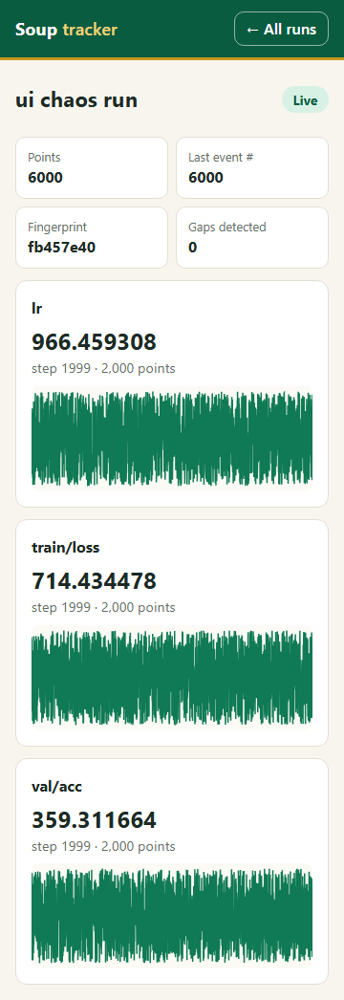
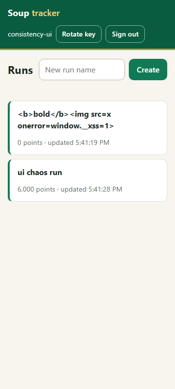
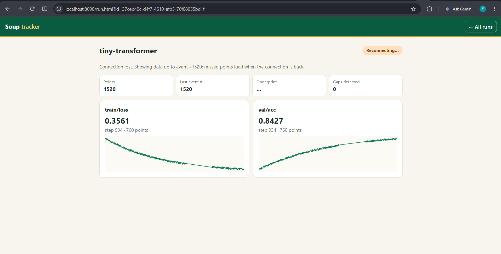
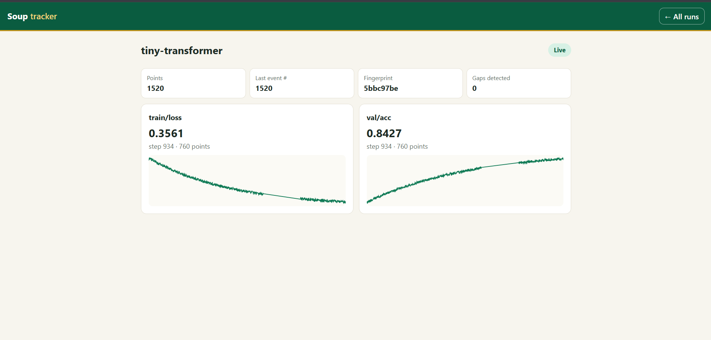
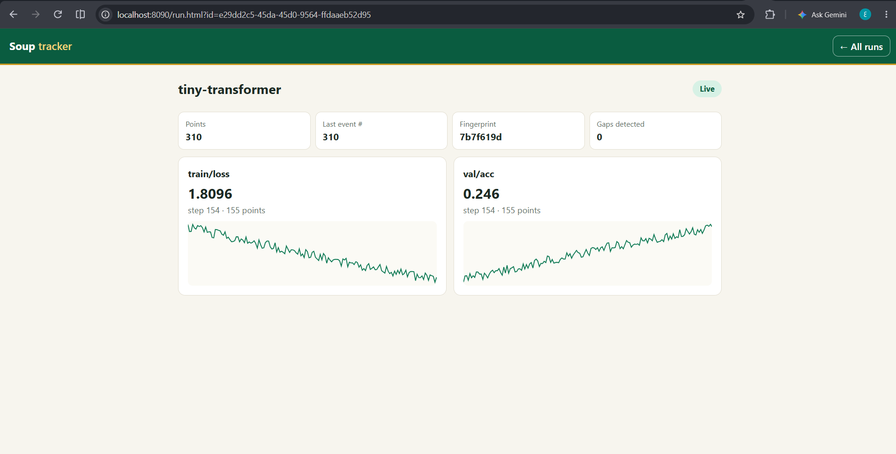
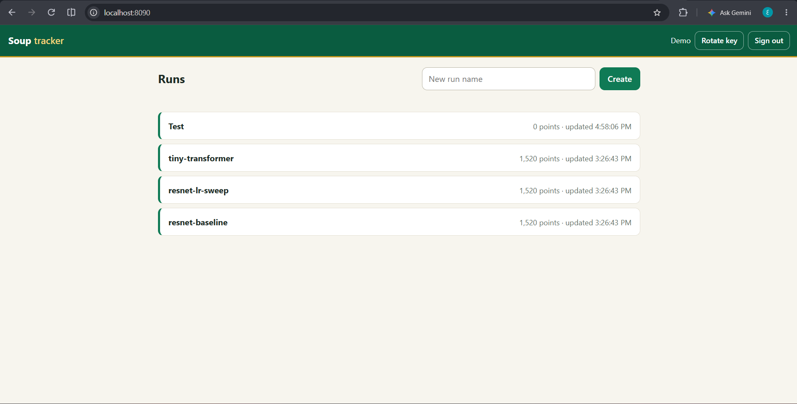
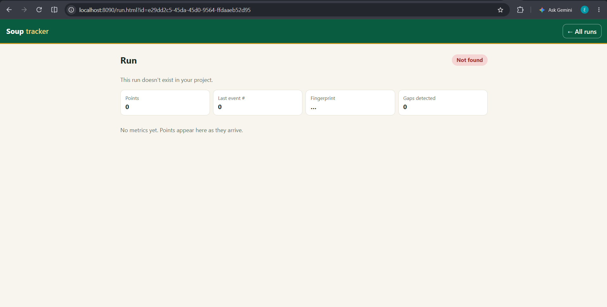
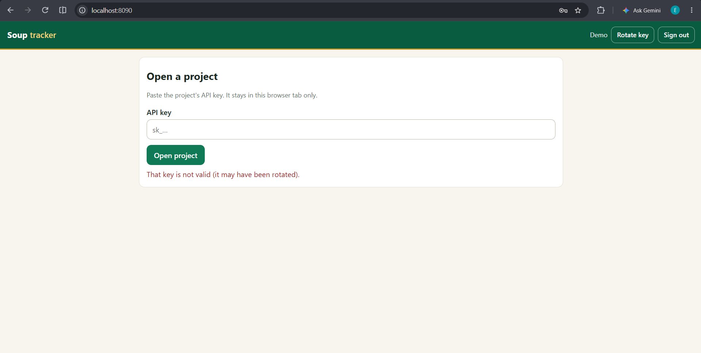

Full-Stack Engineer take-home · full report · November 2026
A mini experiment tracker: projects and API keys, metric ingestion over an unreliable network, a run list, and a run page that updates live.
docker compose up myself. It was checked on GitHub Actions instead: there the compose stack built,
started and passed the smoke test. The numbers in this report come from the same code on a Windows laptop with a
real local Postgres (npm run test:local).| Question | Answer | Evidence |
|---|---|---|
| Does the page match what is stored? | Yes, in the tests | Real browser, 6000 points through a faulty client, 23 forced disconnects, 1.5 s offline: page data, on-screen numbers and fingerprint equal a direct database query. |
| Does a project see only its own data? | Yes, in the tests and by hand | 19 automated tests; byte-identical 404 for another project's run and a non-existent run; checked by hand in two browser sessions. |
| Silent failures | 5 of 5 covered | Each failure named in the brief has its own test with measured numbers (section 6). |
| 50 runs × 10 events/s | SHIP, on conditions | Ingest p50 16 ms, p99 118 ms, 0 failed requests. Breaks at about 3× the request rate. |
| Automated tests | 42 of 42 pass locally | test-output/test-run.txt. The first CI run on Linux failed 2 of them; see the box above. |
| Docker | Works on CI, never run locally | Compose stack built, started and passed the smoke test on GitHub Actions. See the box above. |
| Found by hand, missed by tests | 1 data loss, 2 display bugs | The demo client drops data while the server is down and the chart hides the hole (section 8). |
| Method | Path | Purpose |
|---|---|---|
| POST | /admin/projects | Admin token. Creates a project and returns its API key once. |
| POST | /keys/rotate | New key; every other key of the project stops working immediately. |
| GET, POST | /runs | List and create runs. |
| POST | /runs/{id}/metrics | Ingest a batch. Safe to send again. |
| GET | /runs/{id}/metrics | Read a run's log in pages. |
| GET | /runs/{id}/stream | Live stream (SSE); resume with Last-Event-ID. |
Run it: docker compose up, then open http://localhost:8080 and paste the key printed by the demo service.
Without Docker: npm install, npm run dev:local, npm run demo:local, then http://localhost:8090.
One idea: each run is an append-only log in Postgres, and the live page is a reader of that log that remembers how far it got. The one-page version is DESIGN.md.
POST /runs/{id}/metrics Authorization: Bearer sk_…
{ "events": [ { "key": "train/loss", "step": 120, "value": 0.31 } ] }
→ 200 { "accepted": 1, "duplicates": 0, "conflicts": [], "last_seq": 4812 }
| Order | Assigned by | Used for |
|---|---|---|
step | the client | Where a point sits on the chart. Arrival order does not matter, so a late point lands in its place. |
seq | the server, per run, at commit | Delivery: "what have I not sent this viewer yet". |
seq is assigned inside the ingest transaction while holding a row lock on the run. Writers to one run are serialized, so the committed seqs of a run are always exactly 1..N: no holes, and no number that becomes visible after a higher one. That is what makes "send me everything after N" safe.
A point's identity is (run, key, step). One batch is one transaction. A point that is new is stored; one already stored with the same value is counted as a duplicate and changes nothing; one already stored with a different value keeps the first value and is reported and recorded as a conflict. A resend is therefore harmless and returns 200.
The stream endpoint takes a cursor and runs one loop: read rows with seq greater than the cursor, write them, advance, wait. First load, live updates and reconnect are the same loop. The database notification only wakes the loop; it carries no data, and every stream also re-reads every 3 seconds, so a lost notification costs latency and never data. The server keeps no per-viewer queue, so there is nothing to overflow.
The project of a request comes from the API key and from nothing else. Every query on tenant data is filtered by that project. Another project's run and a non-existent run take the same path and return the same bytes. There is no server-side cache and no authentication cache. Routes can only be registered through three wrappers that state their authentication, and a test fails the build if one bypasses them.
In the tests, yes.
tests/ui.e2e.test.ts, real Chromium): 6000 points sent through a client with lost requests, lost responses, requests aborted mid-flight, stale re-sends and about 5% late points. The server killed the page's live connection 23 times and the browser was offline for 1.5 seconds. At the end the page's data, the numbers on screen and a fingerprint of the point set equal a direct query on Postgres.tests/consistency.test.ts): the same chaos, 72 forced disconnects, two consumers, one joining mid-run. Stored rows equal sent events exactly once, event numbers run 1..6000, both consumers equal the database.sent: 6000 unique events, 378 HTTP requests; chaos: 28 lost requests, 29 lost responses, 29 aborted, 33 stale re-sends, 306 late db: rows=6000 last_seq=6000 fingerprint=fb457e40 page: rows=6000 last_seq=6000 fingerprint=fb457e40 gaps=0


Tested in tests/isolation.test.ts (19 tests) with two projects, A and B.
| Attempt by A | Result |
|---|---|
| Read B's run, metrics or stream | 404, byte-identical to the response for a run that does not exist. No way to tell that B's run exists. |
| Write into B's run | 404; B's rows, event numbers and conflict table unchanged. |
| List runs | Only A's runs. |
| Subscribe to B's stream | A JSON 404, not a stream. While B ingests, A's open stream receives only A's points. |
| Guess IDs | IDs are random UUIDs. Ten malformed or tampered IDs all return the same 404 and never reach the database. |
| Use the wrong credentials | No key, a key in the URL, a missing "Bearer", the admin token as a project key: all 401. |
| Via cache | There is no server-side cache. Responses carry Cache-Control: no-store. This test would not be enough if a cache were added. |
| Channel | State | How checked |
|---|---|---|
| Logs | No key, token or Authorization header in any log line across the isolation suite. | Assertion over captured logs. |
| Logs | Leak, left in on purpose: an unexpected database error is logged with the driver's raw message. If that message ever held a connection string, it would be in the log. | Pinned by a test named "KNOWN LEAK". |
| Error messages | Fixed strings. Validation errors describe only the caller's own input. Server errors are generic. | Nine malformed requests and an injected failure. |
| Timing | Other-project 404 vs non-existent 404: medians 1.018 ms vs 1.016 ms over 300 samples each. | Measured, not asserted. An attacker averaging many requests is not ruled out. |
| Event numbers | Numbered per run, so they reveal nothing about other projects. | By design. |
| Load | Not isolated. No per-project rate limit: one project can exhaust the shared database pool and slow everyone. | Seen in the 150-run load test. |
| Failure | Why it should not happen | How it was checked, and the result |
|---|---|---|
| Events lost on reconnect | The client resumes from the last event it applied; the server replays from the log. | An offline client got exactly the missed points and none twice. A connection cut in the middle of a frame resumed after the last complete frame. With the notification connection killed, delivery still happened in 266 ms by polling, and a warning was logged. |
| Duplicates | Primary key (run, key, step). | The same batch 12 times, 8 of them at once: stored once. 20 concurrent writers: event numbers exactly 1..2000. |
| Same point, different value | First write wins; the conflict is returned and recorded. | Asserted on the response, the conflict table and the stored value. |
| Queue overflow for a slow client | There is no queue; the server stops reading the log until the socket drains. | A client that never reads, with 300000 points waiting: the server stopped at event 4500, buffered at most 54.5 KB, and cut the client off. The client then reconnected and received all 300000. |
| Partial writes | One batch is one transaction; the live event exists only after commit. | An invalid last event: 0 rows stored. An injected crash between INSERT and COMMIT: 0 rows, the viewer saw nothing, the retry stored all 50. |
| Old key after rotation | No grace period, no authentication cache; open streams are closed. | The old key returned 401 on six endpoints at once. Its open stream closed 8 ms after rotation, and after 292 ms when the notification was deliberately not sent. |
How would I know in production that an event was lost? Per run, the last event number must equal the number of rows and the numbers must be contiguous. The page counts gaps itself, and the client checks every acknowledgement. None of this is wired to an alert yet. /admin/stats exposes pool waiters, event-loop delay and stalled-stream counts.
Server in its own process, 50 live viewers, clients sending every 200 ms. Raw output: test-output/loadtest-*.txt.
| Load | Requests/s | Ingest p50 / p99 | Send → viewer p99 | Result |
|---|---|---|---|---|
| 50 runs × 10 events/s (target) | 250 | 16 / 118 ms | 136 ms | 0 failed; 50 of 50 viewers equal the database |
| 50 × 40 events/s | 250 | 14 / 104 ms | 119 ms | same |
| 50 × 10, sending every 100 ms | 500 | 17 / 168 ms | 217 ms | same |
| 150 × 10 events/s | 750 | 23 / 3339 ms | 5333 ms | correct, but database pool exhausted (130 waiting) |
Done in a browser against the app running locally, with the demo simulator feeding three runs. Full write-up: test-output/manual-checks.md.
The page changed to "Reconnecting…" and said it was showing data up to event 1520. The fingerprint is hidden because the page no longer claims to be complete.

send failed, will continue
during the outage. The server and the page agree with each other (0 gaps) and both are missing the data. The page draws a straight
line over the hole, so nothing tells the user.
After restarting the server, the same page returned to "Live" with the same 1520 points, 0 gaps, and the fingerprint back. Limit of this check: the demo had already stopped, so no new points were written while the page was disconnected. It shows reconnecting, not catching up; only the automated tests show catch-up.




With one project open in two tabs, I rotated the key in one. The other tab, still holding the old key, was signed out by itself. The demo client, still writing with the old key, started printing send failed at the same moment.

The code, the tests and the first drafts of the documents were written with Claude Code (Anthropic) from the task brief. Its first output was wrong in these places, and each was caught by evidence, not by reading the code:
| Problem | What exposed it | Outcome |
|---|---|---|
| Stream leak: a write after the socket closed waited forever, so dropped streams were never released. | One odd number in a passing test: "killed 478 connections" for about 90 connects. | Fixed, and now asserted. |
| A load test that measured itself. | First result was ingest p50 = 1.7 s. The load generator shared the server's process. | Separated: 16 ms. |
| A test that could not fail correctly. | The "slow client" test timed out: the client was quietly reading the data instead of refusing it. | Test corrected. |
| Too little chaos in the browser test. | Output showed only 3 forced disconnects and a threshold that sometimes failed. | Lengthened to over 20. |
| Reconnect delay grew while data was still flowing. | Few reconnects in the browser test output. | Delay resets on any received data. |
| Two tests that only failed on Linux CI. | The first CI run: 2 of 42 failed, although all passed on Windows. | A read race and a too-small backlog; both tests changed. |
| Chart thinning could hide a spike. | A failing assertion on the number of drawn points. | Thinning keeps each bucket's min and max. |
What I checked myself: the five manual checks in section 8, which found one real data loss and two display bugs that the 42 automated tests had missed.
What surprised me was how fast the system is and how strict key rotation is. Points show up on the page almost as soon as they are sent. When I rotated the key in one tab, the other tab was signed out within seconds and the demo client started failing straight away. There is no grace period at all.
What still concerns me comes from what I saw by hand. When the server was down, the demo client threw data away and the chart drew a straight line over the hole, so a user would never know points were missing. I found two display bugs just by looking, which 42 automated tests had not caught, so there are probably more. And I have only seen Docker work on CI, never on my own machine, and CI failed two tests that my laptop passed.